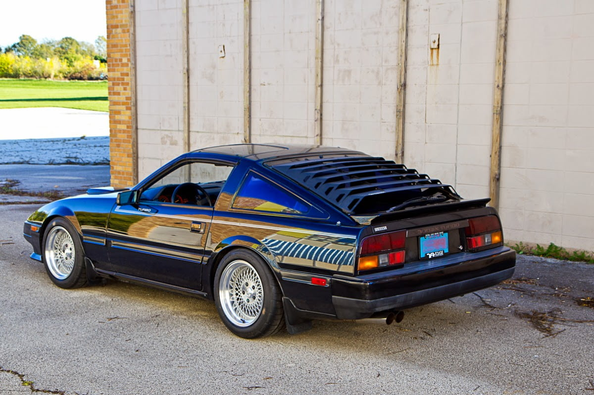

-
Love them on zenkis, if I could find a clean set of 2+2 louvers for my 84 I would rock them all day. The zenki is so quintessentially early-80s that you have to just embrace it instead of trying to work around it. Also they cut down on the crazy greenhouse heat in the rear, which is nice.
Koukis, just no. -
You could say that I am.... a louver, not a fighter.Feedback- viewtopic.php?f=18&t=19840

-

I would have to say one of my favorite things on the car is the perfectly weathered Shadow sticker. Still 100% intact but adds a bit of character to everything.
86na - BlueZ
Shiro #366 - Kouki Monster
85t - Mr Tickles -
Originally posted by adamvann3 View Post -
I think they look OK on your car, not mine. Not my style.
1988 300ZX Turbo, Shiro Special #760
1988 300ZX Turbo Automatic (wife's car)
1991 Hard-body 2WD
http://zccw.org/zccw/?page_id=1215 -
Only sexual predators rock louvers
Don't be a (convicted) sexual predator -
Hey man, everybody needs a hobby.
84 AE/Shiro #683/Shiro #820/84 Turbo -
I don't like them. If the where gonna go on a Z31 it'd have to be the zenki models. I don't feel they fit the koukis at all. Especially not the headlight ones. -
Doesn't blend well on Kouki models. However, I would proudly repesent them on a Zenki/ Chuki without question.Everything is Meaningless. -
louvers
i have the MSA side window louvers for my Kouki 2+2, sanded down and painted to match the car… I think they look great. they stick out a bit and would look much better if they were the "low profile" louvers like you see on the modern Mustangs, however I do not, even for a minute regret putting them on my Z. they keep the car cooler, especially in the hot middle-eastern desert, they darken up the inside back a bit which is cool, and most importantly, they help keep the sun from destroying the interior. if I could get my hands on a rear hatch louver and paint it to match (champagne pearl metallic), I'd do it in a heartbeat. not the ABS one though. they sag eventually. besides, you can powder coat the metal ones personally I think the "without wiper" louver looks better, but those are hard to find… well, louvers in general are hard to find and when they are found, the price is never cheap. if so many people hate louvers, why are they so damn expensive? anybody taken a look at the prices on MSA? nonetheless, I would have louvers on all my Z cars if I could.
personally I think the "without wiper" louver looks better, but those are hard to find… well, louvers in general are hard to find and when they are found, the price is never cheap. if so many people hate louvers, why are they so damn expensive? anybody taken a look at the prices on MSA? nonetheless, I would have louvers on all my Z cars if I could.
cheers everybody,
Bon -
I just had to put them on my 1988 JDM 300zx 2+2 Turbo.... I totally dig them.
I support the 80's retro!!
-
heheh, yeah I dig 'em too. I don't even need to go 80's retro with my Z31 cause some of the young bucks already think its the "back to the future" Delorian complete with a flux-capacitor. haha.Originally posted by amreboot View Post
now days you just don't see them anymore, but I see new mustangs all the time over here sporting modern louvers, and they look great. I'm not really a big mustang guy, but the louvers definitely suit it. evidently they were real big in 70s on domestic muscle cars in addition to our z cars. I don't pass up a chance for a nice louver. I do admit, sometimes they may make a car look fugly, however they do serve a function. I saw a picture of an awesome 280zxt with all three louves painted to match the car and it looked sweet! kept inside dark, cool, and private from the outside. too sweet!
btw, is your JDM 300zx a right hand drive car? how's that like driving in the states? just curious, as I just found an old skyline gt 2000 turbo for sale. and I want to have it so bad even though the steering wheel is on the wrong side of the car!
Bonny -
I feel like they look better on black cars (i.e. adam's). -
Louvers make a cool car go full 'Chester the molester' status. It's a proven fact. -


Copyright © 2006–. All rights reserved. Privacy Policy